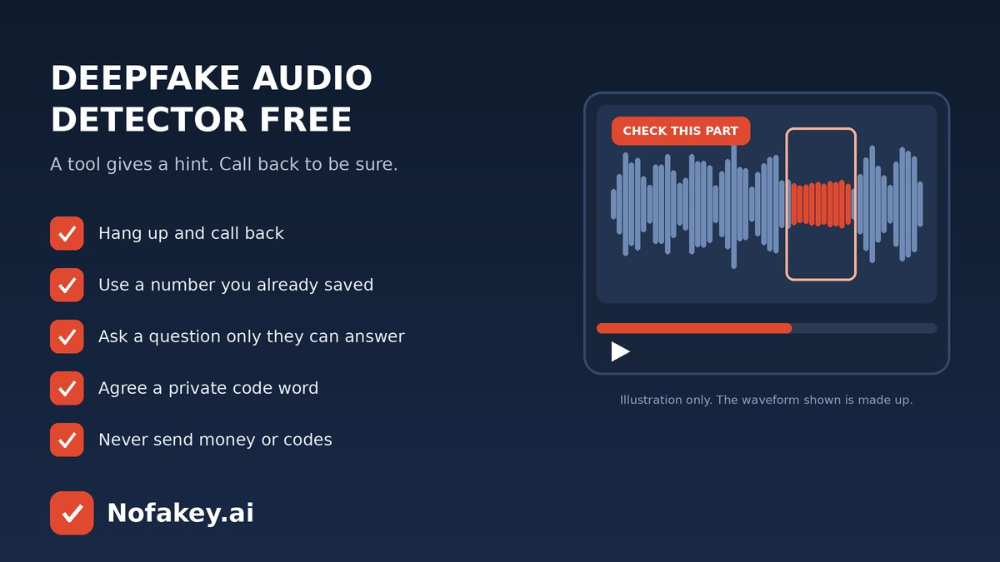

Your phone rings. It sounds exactly like your son, your boss or your bank’s manager, and something is urgent. Voice cloning has made that scene possible, and plenty of people now search for a free deepfake audio detector to settle the question. Free tools can help a little, but they have real limits. This guide explains what they can and can’t do, what to listen for yourself, and the habits that protect you even when a tool says nothing.
What a free deepfake audio detector actually does
Most free detectors work the same way. You upload a short clip or record one, and the tool returns a score for how likely the voice is synthetic. They look for patterns that real speech doesn’t usually have, such as unnatural rhythm or odd frequency detail.
Where free tools tend to be useful
- A short voice note or clip you can save and test, such as a voicemail or a message in a chat.
- Checking a suspicious clip a second time before you share or report it.
- Getting one extra clue when your own ears can’t decide.
Where free detectors fall short
| Limit | Why it matters |
|---|---|
| Needs a recording | A live call is gone as it happens. Upload tools can’t help in the moment you most need it. |
| Short or noisy audio | Phone compression, background noise and cheap microphones can hide the clues or create false ones. |
| New voice tools | A detector trained on older fakes may miss newer ones. |
| Languages and accents | Tools often perform unevenly across languages, accents and speaking styles. |
| Scores, not verdicts | “70% likely synthetic” is not a yes or no. Real voices can score badly, and fakes can score well. |
| Privacy | You may be uploading a private call or a voice sample. Check how the tool stores and uses files. |
The same caution applies to detectors for text and video. See are AI detectors accurate?
What to listen for yourself
Your ears are a decent first filter, as long as you treat them as clues and not proof.
- Flat or odd emotion. A caller in “panic” who sounds strangely even, or feelings that don’t match the words.
- Unnatural pacing. Pauses in the wrong places, no breaths, or a rhythm that feels too regular.
- Strange sounds. Metallic or watery tones, clipped word endings, or sudden changes in sound quality.
- No real conversation. It follows a script and avoids your questions or interruptions.
- Pressure and secrecy. “Don’t tell anyone,” “do it right now,” or an unusual payment method.
A cloned voice may also sound perfect. That is why behaviour and verification matter more than how convincing it sounds.
How to verify a suspicious voice
- Pause. Urgency is the scammer’s main tool. Take a breath before you act.
- Hang up and call back on a number you already have saved, not one the caller gives you.
- Ask something only the real person would know. Avoid facts that are easy to find online.
- Use a different channel. Message them, or ask someone close to them to confirm.
- Never send money, gift cards or one-time codes because of a call alone.
- Save the recording if you can and, if the audio is safe to share, test it with a detector as one extra clue.
- Report it to your bank, your workplace security team or your local cybercrime reporting service.
Protect your family and team
- Agree a private code word for emergencies and keep it off social media.
- Tell older relatives that voices can be faked, and that a call-back is never rude.
- Limit public voice clips where you can, since long, clear recordings are easier to copy.
- At work, require a second approval and a call-back for payments and bank-detail changes. See brand protection against deepfake impersonation.
Fake voices often arrive with a message or link attached. Our guides to AI-generated scam emails and how to know if a video is AI generated cover the same habits for other formats. If a text, email or link came with the call, paste it into our free checker for a quick first read. It checks messages and links, not audio files.
Frequently asked questions
Is there a free deepfake audio detector that works?
Some free tools can give a useful hint, usually a probability score for a short clip. None is reliable enough to be the only proof. Use the score alongside the source, the context and a call-back to a number you trust.
Can I detect a cloned voice during a live phone call?
Not reliably with a free upload tool, which needs a recording. On a live call, rely on behaviour: hang up and call back on a saved number, ask a question only the real person would know, and never act on money or code requests from the call alone.
Can real audio be flagged as a deepfake?
Yes. Background noise, phone compression, poor microphones, accents and heavy editing can trigger false alarms, and some fakes pass as real.
Is it safe to upload a voice recording to a free detector?
Be careful. A recording can contain private information or a voice sample that could be misused. Read the tool’s privacy terms, avoid uploading sensitive calls, and prefer tools that state how long files are kept.
How can I protect my family from voice-clone scams?
Agree a private code word, remind relatives that voices can be faked, and make a habit of hanging up and calling back on a saved number before sending money or sharing codes.
Conclusion
A free deepfake audio detector can be one useful clue, but it can’t replace good habits. Slow down, call back on a number you trust, ask a question only the real person can answer, and never move money or share codes because of a voice alone. Find more guides on the Nofakey.ai blog.
Got a suspicious message, link or email to check?
Run it through the checker